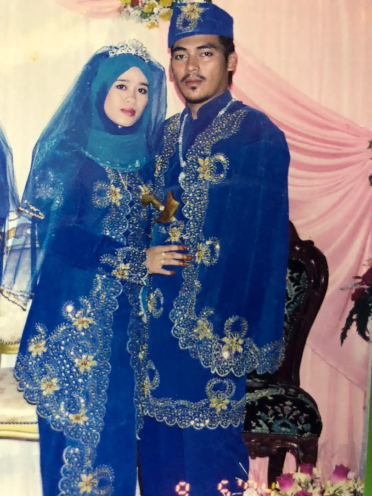
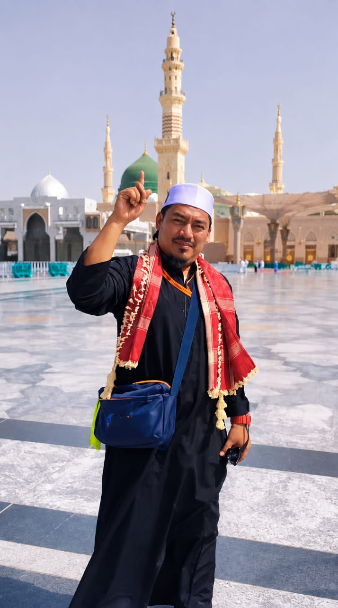
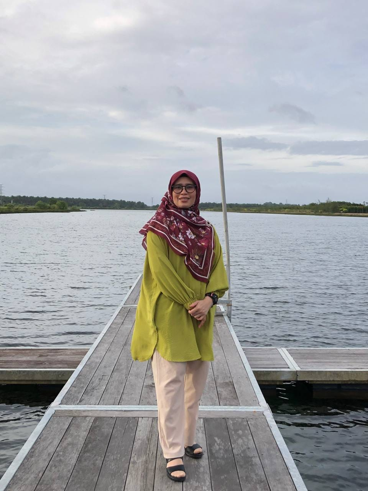

Dari hari ini, 22 tahun sudah ibu dan ayah bersama — mengharungi suka duka, membesarkan anak-anak, dan tak pernah putus doa. Angah tak sempat balik kampung kali ni, jadi biarlah page kecil ni jadi cara angah untuk wish, walaupun jauh di mata.

Ayah yang sentiasa tenang menghadapi apa jua dugaan, yang kerja tak pernah mengeluh demi keluarga. Setiap nasihat ayah, angah simpan sampai bila-bila.
Terima kasih ayah, sentiasa jadi payung sejak dulu sampai sekarang.

Ibu yang tak pernah penat doakan anak-anak, yang sentiasa risau walaupun angah dah besar panjang. Kasih ibu tak pernah berbelah bagi.
Sayang ibu sampai bila-bila, moga Allah panjangkan umur & sihatkan ibu selalu.
Angah tak reka apa yang besar, cuma projek kecil guna ilmu yang angah belajar — sebagai tanda angah sentiasa fikirkan ibu & ayah walau di mana pun angah berada.
Semoga ibu & ayah sentiasa dalam lindungan-Nya, murah rezeki, dan terus jadi contoh cinta yang anak-anak nak ikuti suatu hari nanti.
Selamat Hari Anniversary. Loveyou ibu, loveyou ayah.